In probability and statistics distribution is a characteristic of a random variable, describes the probability of the random variable in each value.
Each distribution has a certain probability density function and probability distribution function.
Though there are indefinite number of probability distributions, there are several common distributions in use.
The probability distribution is described by the cumulative distribution function F(x),
which is the probability of random variable X to get value smaller than or equal to x:
F(x) = P(X ≤ x)
The cumulative distribution function F(x) is calculated by integration of the probability density function f(u) of continuous random variable X.
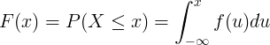
The cumulative distribution function F(x) is calculated by summation of the probability mass function P(u) of discrete random variable X.
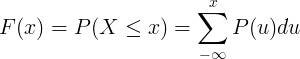
Continuous distribution is the distribution of a continuous random variable.
...
| Distribution name | Distribution symbol | Probability density function (pdf) | Mean | Variance |
|---|---|---|---|---|
| fX(x) |
μ = E(X) |
σ2 = Var(X) |
||
| Normal / gaussian | X ~ N(μ,σ2) |
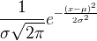 | μ | σ 2 |
| Uniform | X ~ U(a,b) |
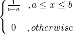 | 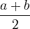 | 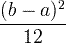 |
| Exponential | X ~ exp(λ) | 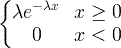 | 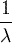 | 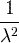 |
| Gamma | X ~ gamma(c, λ) | 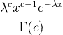 x > 0, c > 0, λ > 0 |
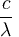 | 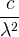 |
| Chi square | X ~ χ 2(k) |
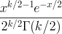 | k |
2k |
| Wishart | ||||
| F | X ~ F (k1, k2) |
|||
| Beta | ||||
| Weibull | ||||
| Log-normal | X ~ LN(μ,σ2) |
|||
| Rayleigh | ||||
| Cauchy | ||||
| Dirichlet | ||||
| Laplace | ||||
| Levy | ||||
| Rice | ||||
| Student's t |
Discrete distribution is the distribution of a discrete random variable.
...
| Distribution name | Distribution symbol | Probability mass function (pmf) | Mean | Variance | |
|---|---|---|---|---|---|
| fx(k) = P(X=k) k = 0,1,2,... |
E(x) | Var(x) | |||
| Binomial | X ~ Bin(n,p) |
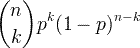 | np |
np(1-p) |
|
| Poisson | X ~ Poisson(λ) |
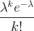 | λ ≥ 0 |
λ |
λ |
| Uniform | X ~ U(a,b) |
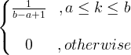 | 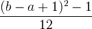 | ||
| Geometric | X ~ Geom(p) |
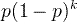 | 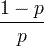 |
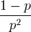 |
|
| Hyper-geometric | X ~ HG(N,K,n) |
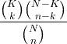 | N = 0,1,2,... K = 0,1,..,N n = 0,1,...,N |
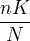 | 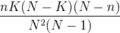 |
| Bernoulli | X ~ Bern(p) |
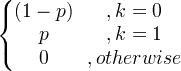 | p |
p(1-p) |
|